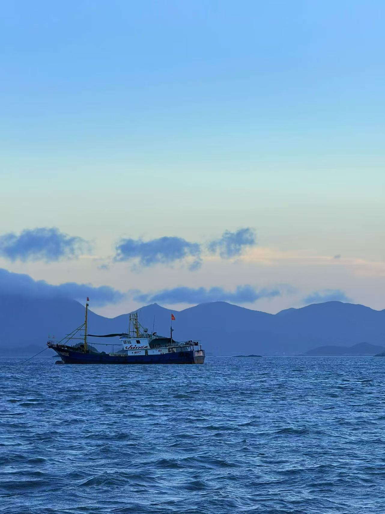
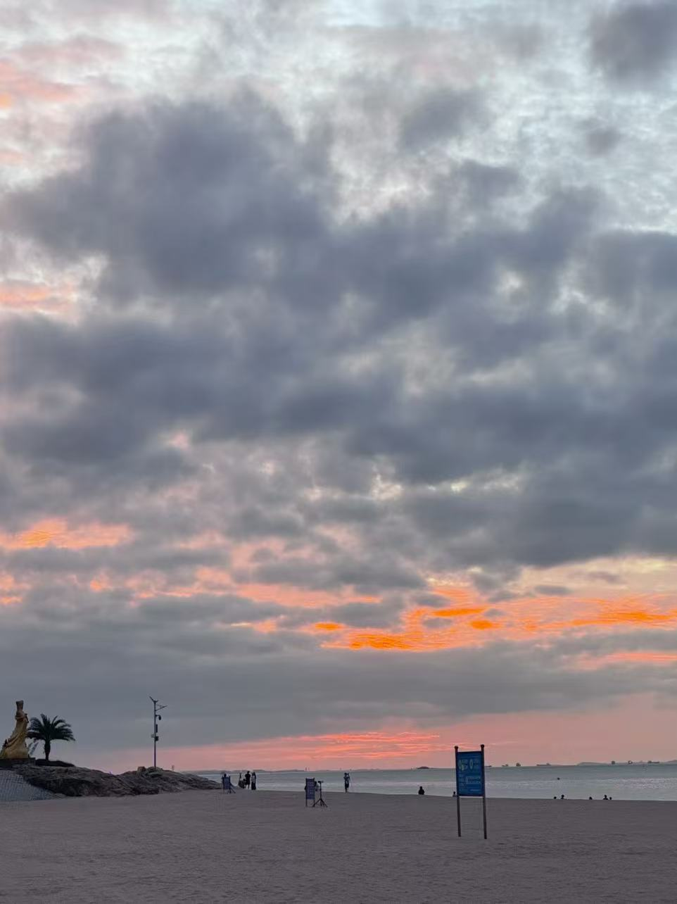
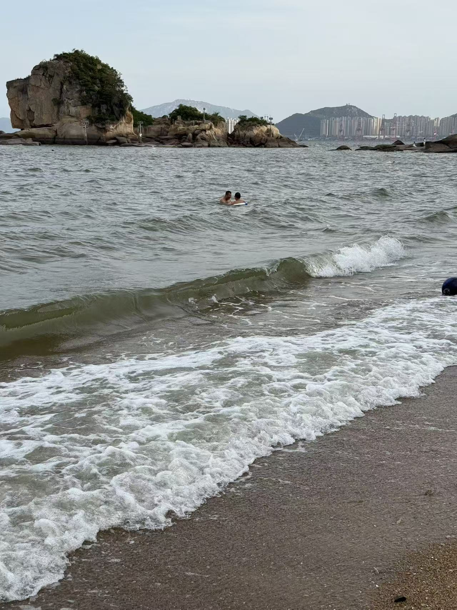
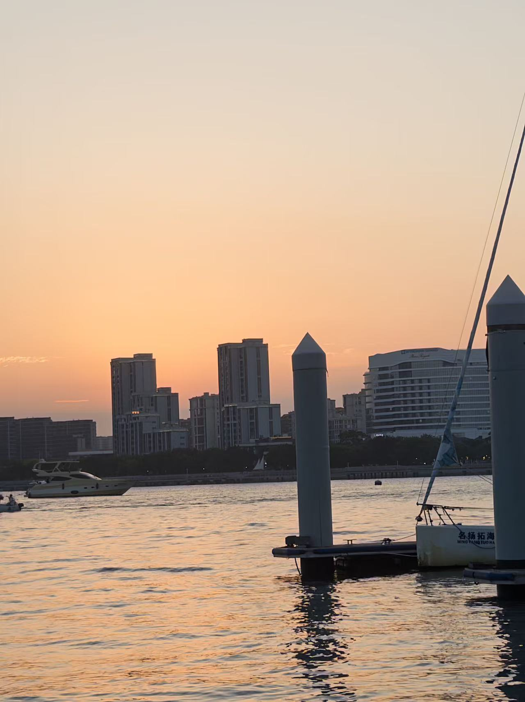
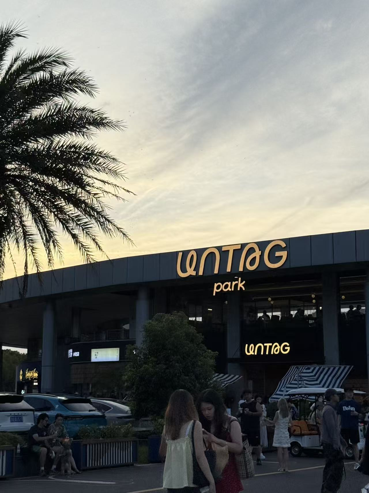
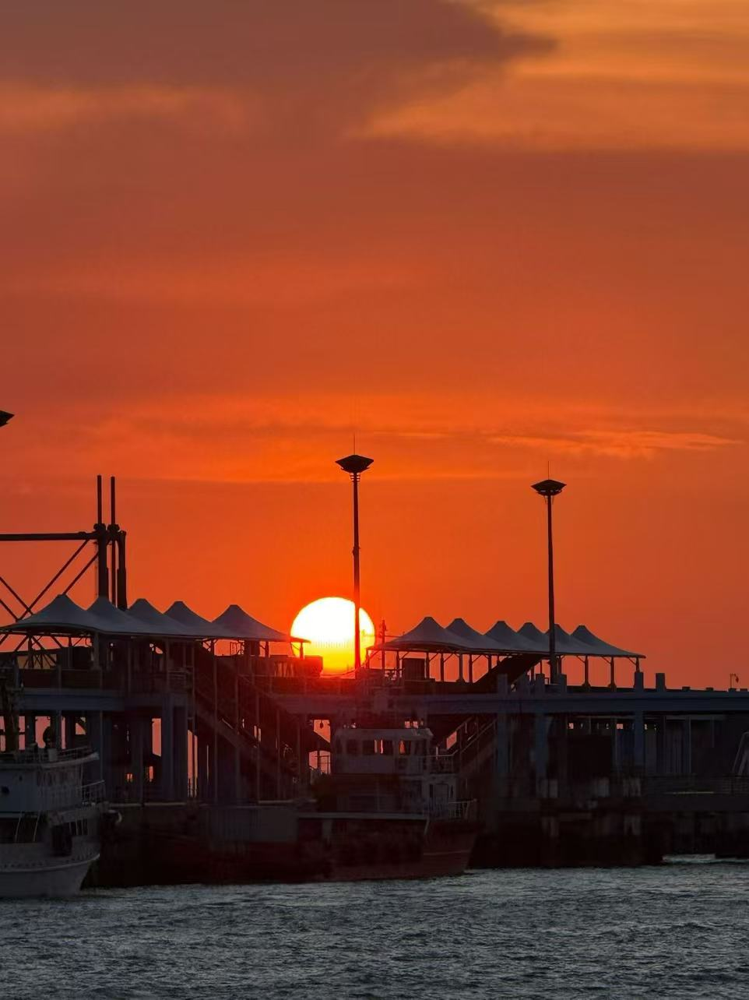
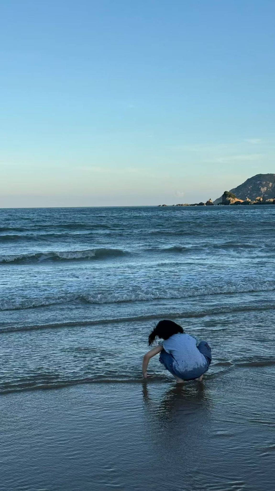
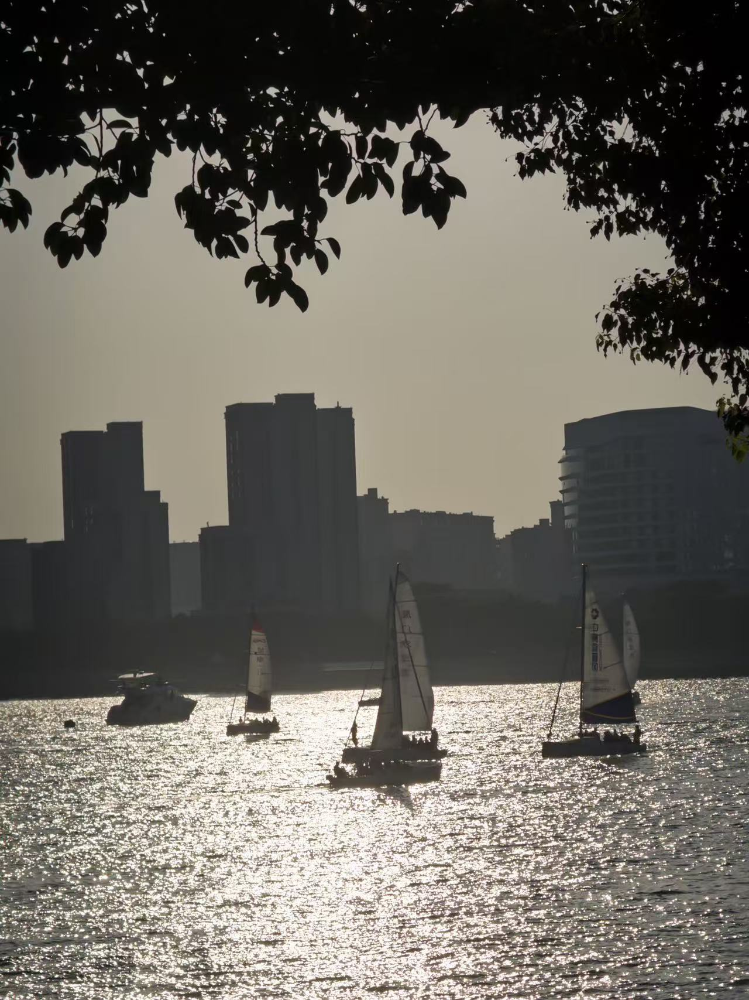

有空一起去看海
工作之外，喜欢在海边停留片刻。这里记录自己拍下的海面、云和晚霞。









YOUR PHOTOS
上传你拍的照片
如果你也拍过海、拍过晚霞，欢迎传给我。我会挑一些放到上面这面墙上，注明拍摄地点和你写的那句话。
工作之外，喜欢在海边停留片刻。这里记录自己拍下的海面、云和晚霞。








如果你也拍过海、拍过晚霞，欢迎传给我。我会挑一些放到上面这面墙上，注明拍摄地点和你写的那句话。